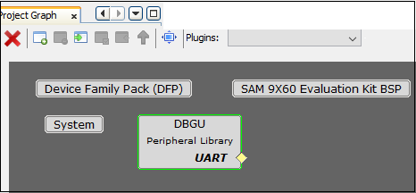
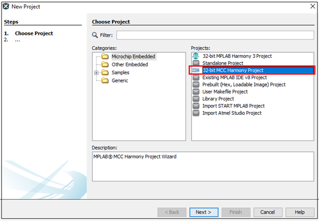
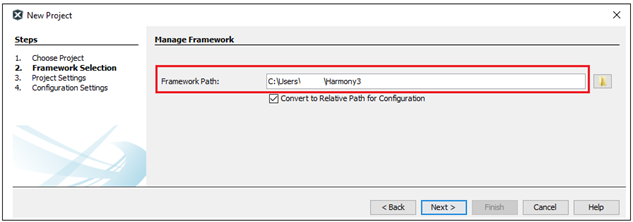
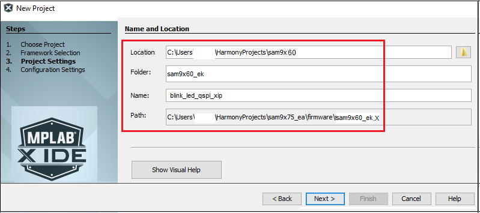
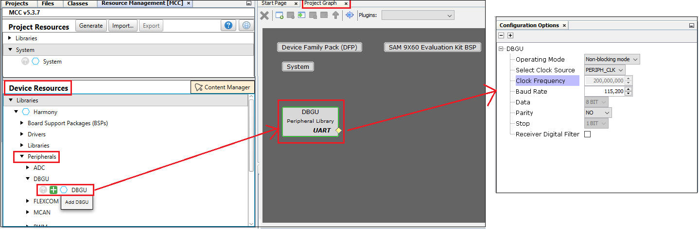
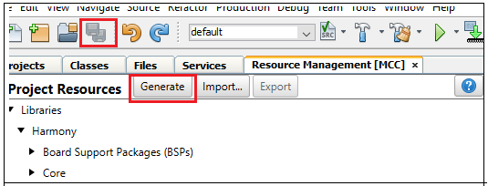
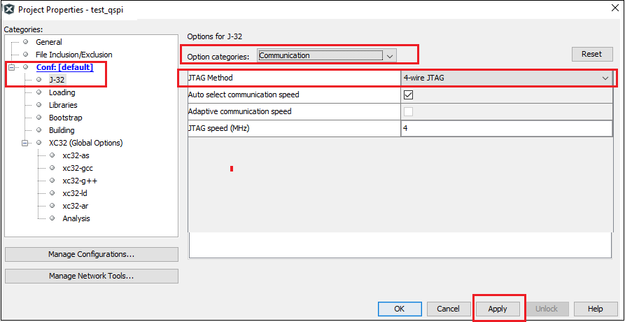
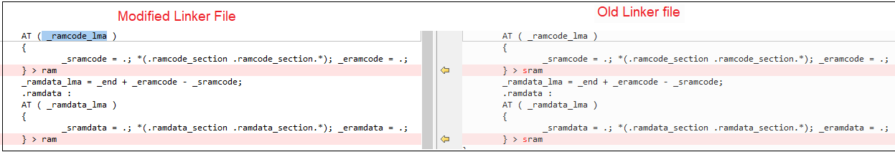
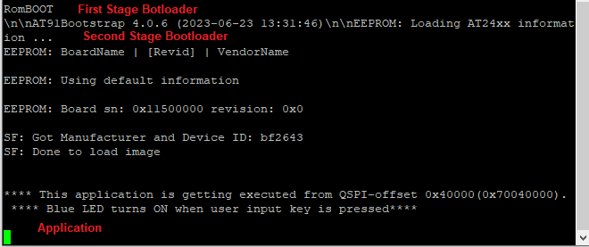

Blink LED Application getting executed from QSPI flash on SAM9X60 Evaluation kit
Download
Description
This application demonstrates how to run and debug an application executed from QSPI flash on SAM9X60 Evaluation Kit. Blue LED turn ON when user input key(sw1) is pressed.
Key Highlights of SAM9X60 Evaluation kit:
- LCD Interface.
- External Non-Volatile Memories like NAND, SD, and MicroSD card interfaces.
- Additional sensors can be interfaced using “click boards” through an on-board mikroBUS connector.
- Two mechanical programmable buttons.
- One User Input Switch(sw1) and one RGB LED.
- UART, USB and CAN Interfaces.
- Raspberry pi connectors.
Modules/Technology Used:
- Peripheral Modules
- BSP
- DBGU

Hardware Used:
- SAM9X60 Evaluation kit.
- SD Card.
Software/Tools Used:
This project has been verified to work with the following versions of software tools:
- mcc_version: v5.3.0
- mcc_core_version: v5.5.0
- mplabx_version: v6.10
- harmony_version: v1.2.0
- compiler: XC32 (v4.21)
Hardware Setup :
- Power up the board by connecting 5V/2A power adapter to J1 or connect the USB Micro-B port(J7) to the Host PC using a micro-USB cable.
- Connect the USB Micro-B port (J22- J-Link-CDC) on board to the computer using a micro-USB cable (to print debug messages on the serial console).
- Default jumper settings should be as follows:
Developing an application executed from QSPI flash memory:
Details
-
Launch MPLAB® X IDE- From the main menu, click on File, then New Project. Under
Projectschoose32-bit MCC Harmony Project, click Next- ForFramework Pathchoose the location on your PC where you want to download the Harmony 3 framework- Click Next.
Note: If you have already downloaded the Harmony 3 framework, enter the location of the harmony framework.

 -
Enter
Location,FolderandName of the project. Click Next.
 -
In the
Configuration Settingswindow, forNameenterdefault, forDevice FamilyselectSAM, forTarget DeviceselectSAM9X60. Click Finish.
This creates an empty project and set this project asmain project. If there are other projects open in the project explorer window, set this project as main project by right clicking on the project, choose ‘Set as Main Project’.
-
After the project is created, MCC will be automatically launched. (To launch MCC manually, from main menu, click on
Tools->Embedded->MPLAB® Code Configuratoror click MCC button in the MPLAB® X IDE tool bar). It will launch Content manger Wizard. Then select MPLAB® Harmony.
-
In addition to the required packages, download the optional packages bsp, csp, core, dev_packs and then click Finish. Content download will take some time. Please wait till all the contents are downloaded.
-
Now a project graph will be displayed. From
Device ResourceaddBoard Support PackagesforSAM9X60 Evaluation kit BSPtoProject Graph.
-
From
Device Resource,Peripherals-> addDBGUto theProject Graphand ensure the configuartion options of DBGU as shown below. This helps to print the debug messages (console serial communication messages) via comm port.
 -
Ensure all the pins are configured as below:
PA9 and PA10 are for console serial debugging. PD18 should be configured for user input switch. PB11, PB12, PB13 are for LEDs red, green, and blue respectively.
Configure the pins PB19, PB20,PB21, PB22, PB23, PB24 for QSPI as mentioned in the below image. -
Now Save all. Then click generate code. This will generate code for all the Device Resource that have been added in the project graph.
 - Up to this point in the project creation process, you used MPLAB Code Configurator(MCC) to configure and generate code to initialize the device (SAM9X60) .
Refer initialization.c file in your project configuration path and find all the device resource added in the project graph got initialized. All that is left is for the user to write the application code in the main.c file. Documentation for each of the peripheral libraries or bsp libraries can be accessed as follows:- Peripheral libraries APIs can be accessed as a HTML file (*.html) from the Harmony 3 Framework path. (framework_path/csp/docs/index.html)
- BSP libraries APIs can be found in bsp.h
- APIs used for this application are as follows:
- bool DBGU_Write( void* buffer, const size_t size );
- bool DBGU_WriteIsBusy( void );
- LED_BLUE_On();
- LED_BLUE_Off);
- SW1_Get();
-
Sample code can be as follows:
-
Now right click on the project and click
Properties. ForConnected Hardware Tool-> select connected hardware debugger used, forCompiler Toolchain-> select XC32 and click Apply.

-
From J-32 ,
Option categorieschooseCommunicationand forJTAG Method, select4-wire JTAG.
 -
Select Bootstrap for Categories and select the
Use Bootstrapcheckbox. Forbootstrap file-> select the at91bootstrap elf file generated by following the steps mentioned in this document. - By default, MPLAB X only produces ELF and Hex format output files. To generate application output in binary format, a post build step needs to be added to the project properties. To do this, go to project properties, building, click the check box
Execute this line after build, then enter the below command.
${MP_CC_DIR}/xc32-objcopy -O binary ${DISTDIR}/${PROJECTNAME}.${IMAGE_TYPE}.elf ${DISTDIR}/harmony.bin
Linker file modifications to execute an application from QSPI flash(offset 0x40000)
In this example we have demonstrated an application getting executed from QSPI flash offset 0x40000.
Note : To change the QSPI offset from where application will get executed, at91bootstrap kconfig must be configured and built.
The following linker file(ddram.ld) modifications are required to enable application getting executed from QSPI:
-
Define only two memory regions:
-
Assign text section to rom(qspi) and data section to relocate section(so, it will be copied from qspi memory to sram during runtime).
Note : bss and relocate sections should be NOLOAD sections
bss and relocate sections should be load from rom(qspi) and run from ram(sram) -
Remove cache aligned sections and assign _ramcode_lma and _ramdata_lma to ram as shown below. 
-
Its a good practice to remove unused input section while building output binary. To do this, go to project properties , xc32-ld config , check Remove Unused Sections as shown below.

-
Now clean and build the project. You should see a message on the output console that the project was successfully built. This completes the development of the application.
</details>
SAM-BA Installation and Setup:
- Install SAM-BA tool on your windows host PC.
- To Download the latest version of SAM-BA tool for Windows click this link.
- Download the ZIP file and unzip it into a working directory of your choice.
- Add the SAM-BA directory path to the environment variables.
- To do this from your PC –> Open the Start Search, type in “env”.
- Choose “Edit the system environment variables” –> Click “Environment Variables” –> “System Variables” –> add SAM-BA directory path to path variables.

- Once the SAM-BA Host program has been installed, the execution of the application is from the Windows command prompt.
- Setup to flash using SAM-BA:
- Open Disable boot Jumper(J13) on SAM9X60 Evaluation Kit.
- Ensure there is no SD memory card inserted and there is no application on any of the external NVMs.
- Press start button.
- Push and hold the “BOOT_DIS” button.(This disables booting from the onboard memories - NAND and NOR(QSPI) flash Memory)
- Reset the board by pressing and then releasing the reset “nRST” button.
- Release the “BOOT_DIS” button.
Configure first stage bootloader to boot from QSPI flash:
Use the below SAM-BA commands to configure first stage bootloader to boot from QSPI. Click here to learn about boot process and first stage boot configuration.
Note: This is not the mandatory step.
- sam-ba -p j-link -b sam9x60-ek -a bootconfig -c writecfg:bscr:EMULATION_ENABLED // Enable Emulation
- sam-ba -p j-link -b sam9x60-ek -a bootconfig -c readcfg:bscr // Read bscr and verify emulation is enabled
- sam-ba -p j-link -t 5 -b sam9x60-ek -a bootconfig -c resetemul // Emulation SRAM Reset
- sam-ba -p j-link -b sam9x60-ek -a bootconfig -c writecfg:bcp-emul:DBGU,QSPI0_IOSET1 // Enable debug, QSPI0 as external NVM
- sam-ba -p j-link -b sam9x60-ek -a bootconfig -c readcfg:bcp-emul // Read bcp_emul and verify whether QSPI is set as external NVM
Now reset the board by pressing reset button.
Note: Boot configuration using Emulation SRAM has to be set every power cycle.
User can also write boot configuration packet(BCP) to OTPC(One Time Programmable Memory Controller). Refer SAM-BA installation directory on how to write BCP to OTPC
Debugging Application Project executed from QSPI on MPLAB® X IDE:
- Open the project (sam9x60_ek_blink_led_qspi_xip/firmware/sam9x60_ek.X) in MPLAB® X IDE.
- In the project properties, ensure
SAM9X60is selected as the ‘Device’ and forConnected Hardware Tool, select connected J-Link debugger with the board to program/debug the application. - Build the code.
- Before debugging ensure that harmony.bin file in your project directory is flashed in the QSPI offset.
- Refer the section “SAM-BA Installation and Setup” for initial device setup and tool installation procedure.
Use the below sam-ba commands to erase QSPI flash and program the application.
- sam-ba -p j-link -b sam9x60-ek -a qspiflash -c erase //To erase entire QSPI flash
- sam-ba -p j-link -b sam9x60-ek -a qspiflash -c erase:0x40000:0x20000 //Erase only 0x20000 bytes of data from the QSPI offset 0x40000
- sam-ba -p j-link -b sam9x60-ek -a qspiflash -c write:harmony.bin:0x40000 //Program the application in the QSPI offset 0x40000
Note : Don’t flash boot.bin to QSPI memory to debug the application on MPLAB® X IDE.
- Debug the code by clicking on the “Debug” button in MPLAB® X IDE tool bar and observe that the application is getting executed from QSPI flash memory.
- Run the application by clicking the “run” button in MPLAB® X IDE tool bar. A terminal emulation program running on the Host PC communicates with the SAM9X60 Evaluation kit J-Link CDC. Ensure the terminal emulation program(Eg: PUTTY) is configured to the COM port and settings are:
- Speed: 115200
- Data: 8
- Parity: None
- Stop Bits: 1
- Now, you will get the debug message on the serial console as “This application is getting executed from QSPI-offset 0x40000”. Now press the user button(sw1) and observe LED getting turned ON.
Steps to execute the harmony application from QSPI flash:
SAM-BA commands to program the boot and application file to QSPI flash:
- sam-ba -p j-link -b sam9x60-ek -a qspiflash -c erase //To erase entire QSPI flash
- sam-ba -p j-link -b sam9x60-ek -a qspiflash -c writeboot:boot.bin //To program bootstrap bin file
- Note: Use the boot.bin file generated by following the steps mentioned in this document.
-
sam-ba -p j-link -b sam9x60-ek -a qspiflash -c write:harmony.bin:0x40000 //Program the application in the QSPI offset 0x40000
Note : Flash both boot.bin and harmony.bin to QSPI memory to execute the application from QSPI upon reset . - Press the reset button.
-
Now, you will get the debug message on the serial console as “This application is getting executed from QSPI-offset 0x40000”. Now press the user button(sw1) and observe LED getting turned ON.
 - NOTE